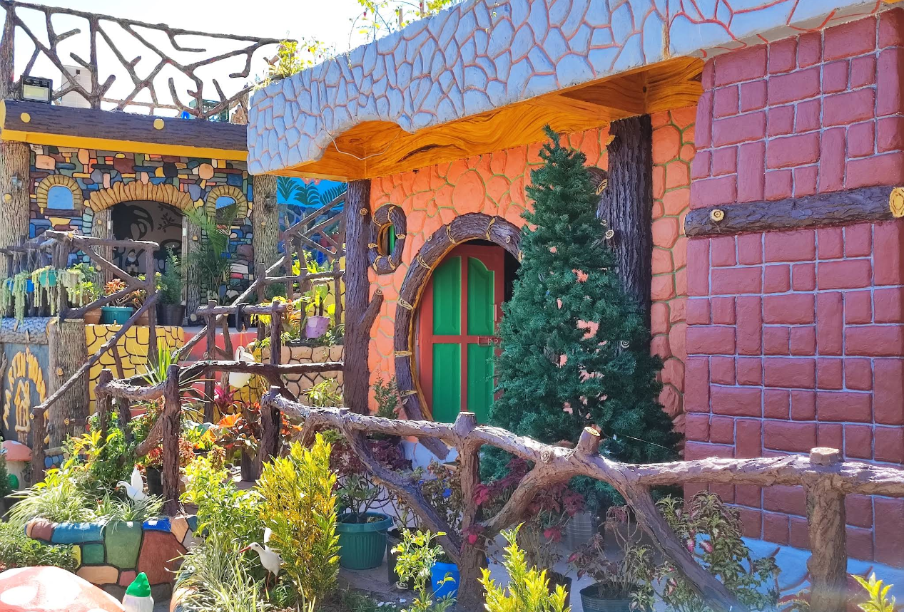
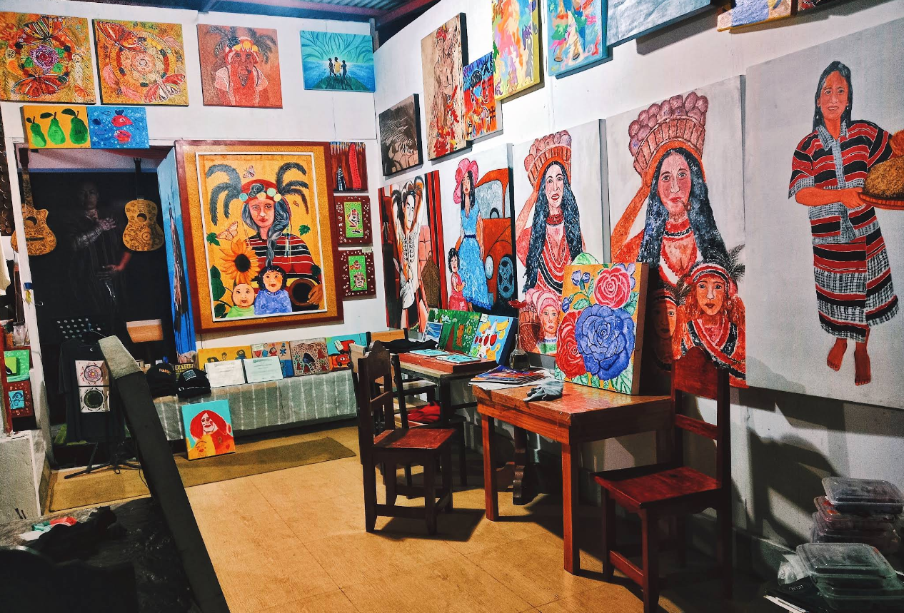
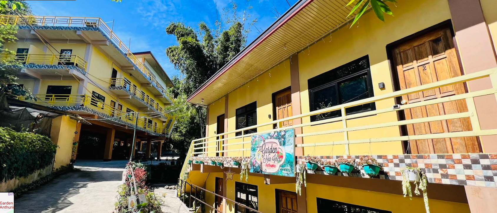
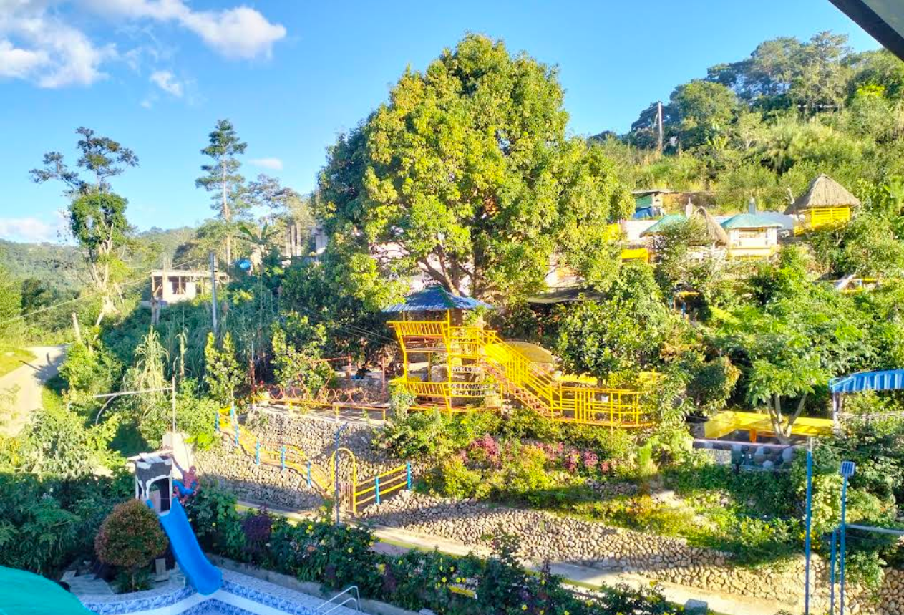

Farm and flowers
DarJane’s Garden
Address: Shilan Road, La Trinidad, Benguet, Philippines.
Known for ornamental plants and sunflower production. Contact the owners to confirm current visitor access and products.
Find local places
These farms, community attractions, and nature spots are in Shilan, La Trinidad. Map searches may show approximate pins; confirm routes, access, and permission with local contacts before travelling.

Farm and flowers
Address: Shilan Road, La Trinidad, Benguet, Philippines.
Known for ornamental plants and sunflower production. Contact the owners to confirm current visitor access and products.

Art and handmade goods
Address: FJ6G+PHH, Shilan Road, La Trinidad, Benguet, Philippines.
A small gallery described by a local travel feature as showcasing work by local and Benguet artists. Check recent posts for current displays and arrangements.
Waterfall · check access first
Address listing: Shilan Road, La Trinidad, Benguet, Philippines. The map listing does not provide a street number or trailhead address.
A 2021 visitor guide advised coordinating with a barangay official because the site was not generally open to tourism at that time. Ask local authorities or a community guide about current permission and safe access before setting out.

Flowers and ornamentals
Address: Tebteb, KM 12, Shilan, La Trinidad, Benguet, Philippines.
ATI-CAR describes this learning-site garden as specializing in anthuriums and other ornamental plants. Confirm current visitor access and services before visiting.

Garden and farm tourism
Location: Barangay Shilan, La Trinidad, Benguet. Use the map search as a starting point and verify the pin with the owners.
The La Trinidad municipal announcement includes Kiyomie’s Garden among the Shilan tourism village attractions.